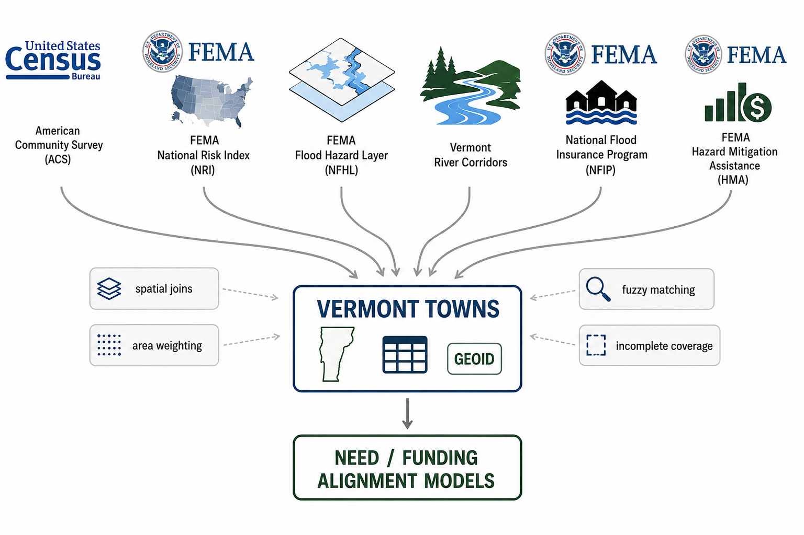
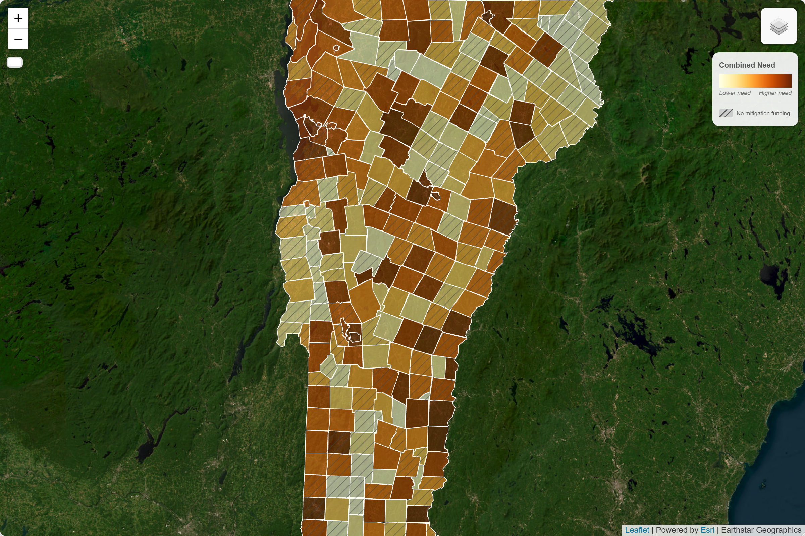
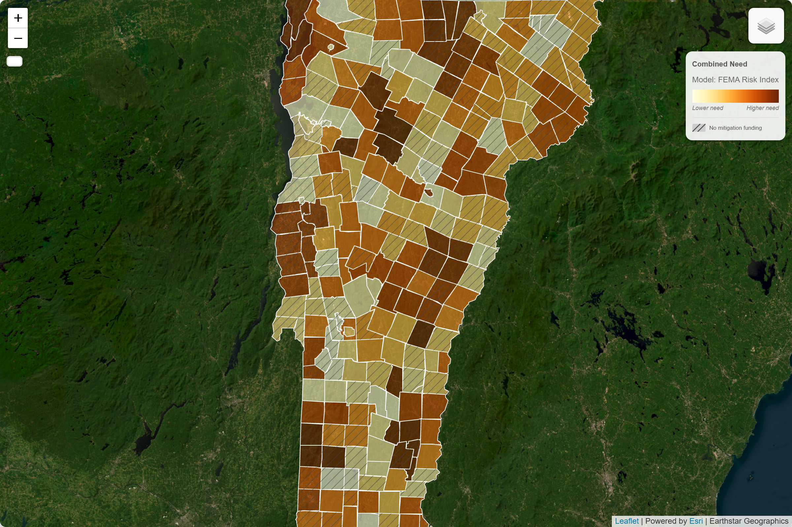
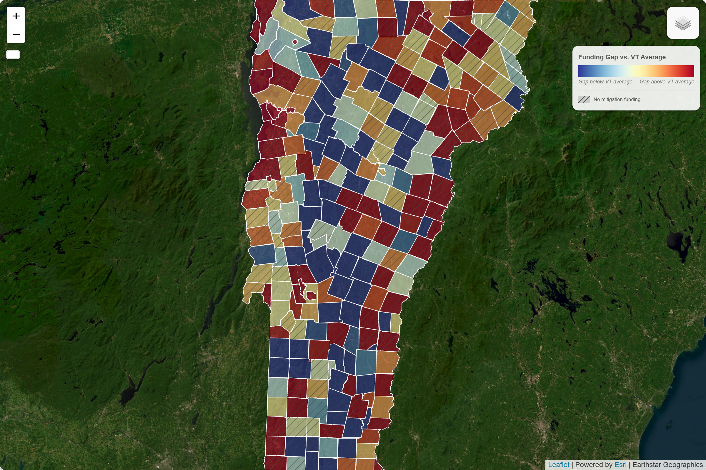
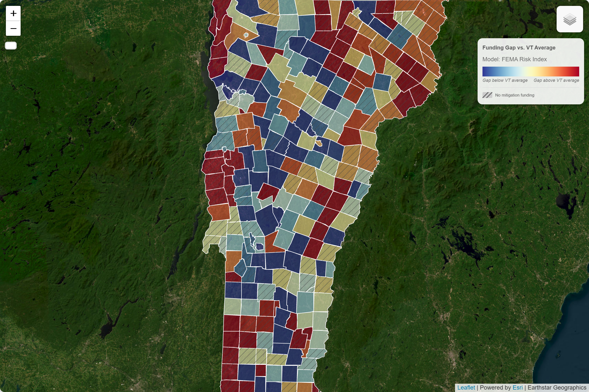
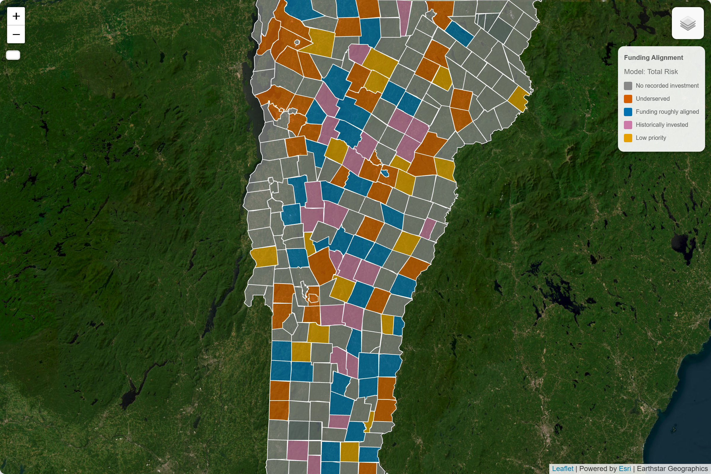
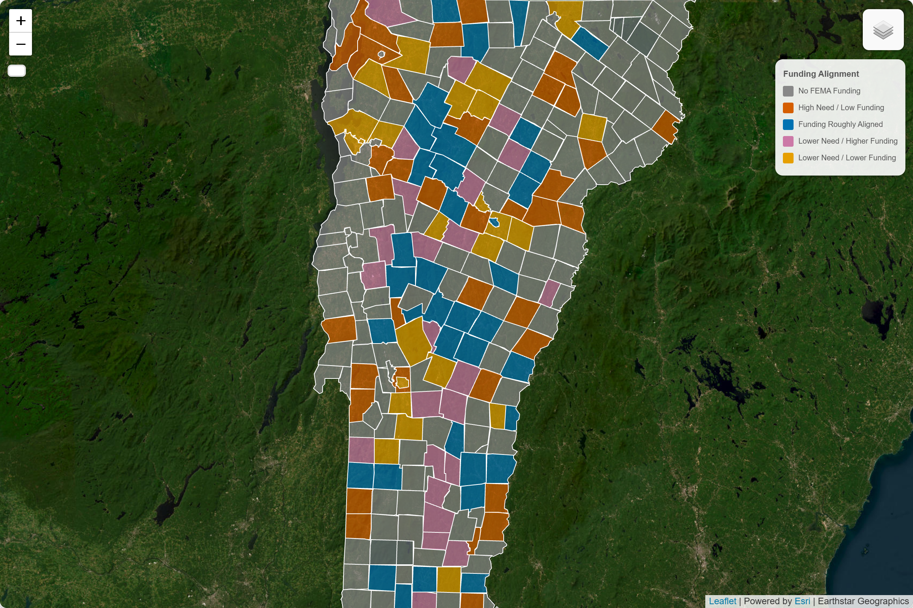

Somewhere in the working notes of every emergency manager and state hazard planner is a version of the same unanswered question: Why does the money keep going to the same places? This analysis tries to answer it, at least for Vermont, and at least as a starting point for a harder, broader conversation.
The reasons are likely institutional as much as physical: disaster declarations unlock funding opportunities, programs operate through administrative processes, and communities with prior experience may be better positioned to navigate them. Communities with high exposure and few resources are often invisible, not because no one wants to help them, but because the system isn't designed to find them before disaster makes them unmissable.
Prologue: Two Towns
Bennington sits in the southwest corner of Vermont where the Walloomsac River threads through a downtown of old mills and historic storefronts. The river runs ordinarily most of the year. In heavy rain it doesn't. Its corridors and low crossings appear repeatedly in flood exposure datasets. Yet the federal Hazard Mitigation Assistance (HMA) ledger records little or nothing for the town.
Newport City sits at the other end of the state, on the southern shore of Lake Memphremagog in the Northeast Kingdom, with an older, lower-income population and a vulnerability score that ranks near the top of the state. Like Bennington, its HMA record is thin.
Neither town is a curiosity; roughly half of Vermont's municipalities have no recorded HMA awards. They are examples of a pattern the data reveal clearly: places where physical exposure meets social vulnerability often sit at the back of the funding queue. Not because they are overlooked by any single person's bad intent, but because the institutions that distribute mitigation money are oriented, structurally, toward the recent past.
The Core Question
Why do some towns receive mitigation funding while others do not?
On the surface it sounds like a data problem: measure exposure, distribute dollars proportionally, and you're done. In practice the answer is institutional. Two forces shape the geography of protection, and neither is straightforwardly about the level of risk.
Measurement determines which communities appear on a priority list in the first place. What counts as "need"? Expected property damage? Population vulnerability? A combination? Calculated in total or per capita? Each choice yields a different map, and a different set of towns at the top of it. Measurement is not a neutral technical operation; it is a political act that creates the categories programs respond to.
Institutions determine which towns on that map actually get funded. Programs have rules, timing, procedural hurdles, and administrative burdens. Navigating them often requires staff time, technical expertise, and familiarity with grant processes. Communities that have previously participated in mitigation programs or experienced major disasters may therefore have advantages that are not captured by risk metrics alone.
Measurement creates the map. Institutions decide which dots on that map get money. This analysis is about the distance between the two.
The Floods and the System
Vermont has been reminded twice in the past fifteen years that its rivers can reorganize lives overnight. In August 2011, Hurricane Irene stalled over the state, washing out bridges, carving new channels through road beds, and leaving a thick residue of mud through downtowns from Brattleboro to Johnson. Twelve years later, in July 2023, a stalled frontal system dropped historic rainfall across the river valleys, flooding downtown Montpelier for the first time in a generation and filling basements across dozens of communities. "Vermont Strong" became a phrase that meant something, but it also carried a quiet acknowledgment: this is what the new normal looks like.
These events are lodged in public memory. They are also lodged in federal programming. Declared disasters do two things simultaneously: they unlock emergency relief and they create the political moment for mitigation investment. FEMA Hazard Mitigation Assistance funding in Vermont shows sharp peaks following both events. The correlation is not coincidental; it is structural.

Mitigation is designed to do what disaster relief cannot: pay to prevent the next event from causing the same damage. It is slower, harder, and in many ways more valuable work: property acquisitions and voluntary buyouts, culvert upgrades, structure elevation and floodproofing. These projects require local matching funds, environmental review, and benefit-cost analyses. A small town's highway department doesn't have that capacity on the shelf. Yet after a major event, many communities gain access to resources that were previously unavailable. State and federal teams arrive, consultants and engineers become involved, and grant applications begin to move forward. Some of that expertise and institutional knowledge remains after recovery is complete. While this analysis does not directly measure administrative capacity, it suggests that prior disaster experience may create advantages that extend beyond the immediate recovery period.
Two structural features are worth holding in mind. First, property acquisitions and buyouts consume a disproportionate share of HMA spending; an effective but expensive and socially disruptive approach, they almost always follow visible disaster narratives. Second, many federal funding mechanisms are formally linked to disaster declarations. That linkage channels money toward places with a record of quantifiable loss, not necessarily toward places with the highest projected future harm.

The Model
Need = Risk + Vulnerability
Gap = Need - Funding
To test whether mitigation dollars align with forward-looking need, this analysis uses a deliberately simple, transparent index. Simplicity is a feature, not a concession: the goal is to ask whether even a rough, two-component composite captures something the current funding geography misses.
The index has two parts:
- Risk: A town's modeled exposure to flood damage, measured as expected annual loss from inland flooding. The primary source is FEMA's National Risk Index, which synthesizes physical hazard exposure with building stock and population data.
- Vulnerability: A compact socioeconomic composite drawn from the American Community Survey: the share of residents below the poverty line, the share of elderly residents, and the share of households without vehicle access. These three variables proxy what the resilience literature calls adaptive capacity: a community's ability to absorb and recover from damage.
Each component is converted to a percentile rank so towns are compared to one another rather than to absolute figures. Per-capita and total-risk variants are both included, because the choice between them (like every measurement choice) reshuffles which communities appear most exposed. HMA funding is also converted to a per-resident percentile, after a log transformation to reduce the distortion caused by a small number of towns with very large grant totals.
The gap is the difference: need percentile minus funding percentile. A town with a large positive gap ranks much higher on need than on funding received. A few practical notes on method: percentile ranks are interpretable to non-specialists in a way that z-scores are not. The log transform on funding is standard practice when distributions are heavily right-skewed; it prevents a handful of large outliers from dominating the comparison.
This is not a forecasting engine. It doesn't capture local land-use history, municipal governance quality, or the specifics of any individual project. It is designed to surface broad patterns in a form that practitioners can actually use, which requires it to be simple enough to explain at a town select board meeting.

What the Data Shows
Map the need index and familiar patterns emerge. Valley corridors where built assets crowd against stream channels, town centers sitting in historic floodplains, and pockets of the Northeast Kingdom with high poverty rates and aging housing stock all appear as places where physical exposure and social vulnerability overlap. The Connecticut River corridor, the Winooski basin, and parts of the Lamoille and Missisquoi drainages light up across multiple model specifications.



But even "need" is not fixed. The measurement choices that define risk change which communities become visible. Under a total-risk model, larger population centers with substantial building stock dominate. Switch to a per-capita measure and smaller towns with high relative exposure move up the list. Layer in the vulnerability component and a different set of rural communities appears. These are not minor fluctuations; they represent genuinely different answers to the question of who needs protection.
The interactive model toggle makes this concrete: the same underlying data can produce meaningfully different maps depending on how risk is defined. The question is not simply which model is most technically accurate, but which definition of need should guide protection.
Now layer on funding. The maps diverge sharply. Towns with large HMA totals often have their funding explained better by past disaster experience than by where modeled need is highest. Many towns with high modeled need receive little or no recorded HMA funding. Bennington and Newport are examples, but they are far from alone.



The correlation between need rank and funding rank, across all three model specifications, sits in a weak range of 0.1 to 0.3. The correlation between historical National Flood Insurance Program (NFIP) claims paid and HMA funding is closer to 0.5 to 0.6. Prior claims, a measure of past loss, are more strongly associated with mitigation funding than the forward-looking need index used here. The system has better institutional memory than foresight.
The scatterplot makes the structural pattern legible. If funding tracked need, the points would climb together along a diagonal; instead they form a diffuse cloud with no clear upward trend. A few towns with high need also have high funding, but they tend to be places that experienced severe disasters, not places that simply rank high on the composite index.
The model toggle reinforces a broader point: different definitions of risk produce different geographies of need.
Model: Total Risk (Expected Annual Loss)
Funding is only weakly correlated with total expected flood loss. A few high-loss towns attract significant grants, but many high-need towns receive little or nothing.
Model: Risk per Person (Expected Annual Loss per Capita)
Adjusting for population reshuffles the map. Smaller, high-exposure towns rise in need, but their funding levels rarely follow. Switching to this view is where priorities diverge most sharply.
FEMA National Risk Index
FEMA's own composite risk benchmark shows similar patterns. Funding appears driven more by where damage has already occurred than by where risk is currently greatest.
The important takeaway is not that any single model is correct. It is that each measurement system illuminates different communities and obscures others. The system currently in use appears largely reactive to declared-disaster history, suggesting a structural blind spot for places with high forward-looking need and limited recent disaster history.
A quadrant framework brings this into operational focus. Towns fall into five categories: aligned (high need, high funding), underfunded (high need, low funding), overfunded (low need, high funding), low-priority (low need, low funding), and zero-funded (no HMA record at all). That last category is striking: roughly half of Vermont's municipalities have no recorded HMA awards. Among high-need towns by the composite index, zero-funded is disproportionately common. These are not small-funding communities; they are no-funding communities.



The pattern cuts across the state. It appears in rural hill towns and small urban centers, in the northeast and the southwest. This suggests institutional history may be more important than geography alone. Prior disaster experience is more strongly associated with funding than modeled exposure.
Why the Mismatch Exists
Three interlocking forces help explain the gap between need and funding.
Disaster-triggered allocation. The largest concentrations of mitigation funding follow declared disasters. This is both understandable and limiting. Declarations create political will and administrative bandwidth. But they also mean that the system is most generous precisely where recent damage has already been most visible, not necessarily where future damage is most likely. Communities that have escaped the worst events in a given decade enter the grant competition at a structural disadvantage.
Administrative complexity as a barrier. HMA is not a passive transfer; it requires active grant management. Benefit-cost analyses, local match coordination, environmental review, project scoping, and multi-year grant administration are all prerequisites. These requirements may be easier for communities with dedicated planning staff, consultant support, or prior experience navigating federal programs. While this analysis does not directly test those factors, they represent plausible mechanisms through which funding outcomes can diverge from modeled need.
Path dependence. Prior participation in mitigation programs may create advantages that persist over time. Communities that have already completed projects often possess institutional knowledge, established relationships, and familiarity with program requirements that can lower barriers to future participation. Whether through administrative capacity, disaster history, or other reinforcing factors, funding systems can become path dependent, with past participation influencing future opportunities.
Two subtler biases compound these structural factors. Federal benefit-cost frameworks favor projects where quantifiable property value is concentrated and damages are clearly attributable, which tends to favor denser, wealthier communities over dispersed rural ones with high human vulnerability but low property density. And political visibility matters: towns that can tell a well-documented, emotionally legible story about past loss have an advantage in the narrative competition that shapes discretionary grant decisions. Rural communities without that story, or without the staff to tell it effectively, are penalized.
Together these mechanisms create a system that is better at responding to institutional memory than at anticipating future harm.
What Happens Next
Two policy shifts appear most directly relevant, though neither is a quick fix.
Map updates. Updated Flood Insurance Rate Maps will change regulatory baselines, insurance obligations, and grant eligibility for affected properties throughout Vermont. More accurate mapping is essential. But maps are only useful if the programs that use them are redesigned to act on updated risk signals. A map that shows a town newly in a high-risk zone does nothing by itself; what matters is whether the institutional rules governing grant eligibility and priority-setting incorporate that information.
Capacity and match reforms. The gap between need and capacity is closable through deliberate program design. Lower local match requirements for small, low-capacity municipalities; dedicated technical assistance and pre-scoped project menus; proactive outreach to zero-funded towns; and regionally embedded planning staff are all levers that states and federal programs can pull without requiring legislation. Vermont's natural hazard mitigation program has made incremental progress on some of these fronts; the gaps remain large. The most tractable intervention is probably also the most prosaic: fund more planners and grant writers in places that don't have them.
The deeper challenge is cultural and institutional. Forward-looking risk metrics need to be formally embedded in program prioritization criteria, not as supplementary considerations but as primary ones. That requires FEMA and state partners to be willing to fund mitigation before disaster, on the strength of projected exposure alone, which is a harder political sell than responding to images of flooded downtowns, but the only way to shift from reactive to anticipatory resilience.
Policymakers don't need perfect models to act. They need usable indicators joined to concrete administrative remedies: a ranked list of high-need, low-funded communities, paired with a funded mechanism to reach them before the next flood.
Conclusion
Bennington and Newport are examples, not exceptions. Bennington did flood during Irene; other towns flooded worse. Newport happened to miss the worst of both 2011 and 2023. Neither town has a guarantee about the future. The patterns revealed here are not destiny; they are the accumulated product of choices about measurement, program design, and institutional investment. Those choices can be changed.
What this analysis demonstrates is that a simple, transparent, two-component need index — built from publicly available federal data, requiring no specialized modeling infrastructure — can surface systematic gaps that are otherwise invisible in the ordinary operation of the funding system. The index is not a substitute for local knowledge or detailed engineering assessment. It is a way of asking, at scale, which communities the current system is structurally unlikely to reach on its own.
The challenge is not only technical. We have adequate methods to identify high-need communities. What we lack is the institutional will to fund them before disaster makes the case undeniable. Resilience, as a policy goal rather than a recovery slogan, means shifting the frame: from where did the last flood hit to where will the next one hurt most and find the least preparation. That shift — from institutional memory to institutional foresight — is the practical work this analysis is trying to support.
A Note on Data Limitations
The findings here hold across model specifications, normalization approaches, and variable choices: the broad pattern is robust. Several important limitations apply:
- Town-level aggregation. A high composite score for a municipality doesn't mean uniform exposure across every neighborhood. Flood risk at the parcel level can vary dramatically within a single town boundary.
- Funding data reflects awards, not applications. The gap between what towns apply for and what is approved, including towns that applied and were denied, is not captured here. The analysis understands what was funded, not what was attempted.
- Individual rankings are approximate signals. The confidence in this analysis is greatest in aggregate patterns. A single town's relative position in the rankings should be read as a signal worth investigating, not a precise verdict.
Full methodology, data sources, and code are available in the technical appendix and project repository.